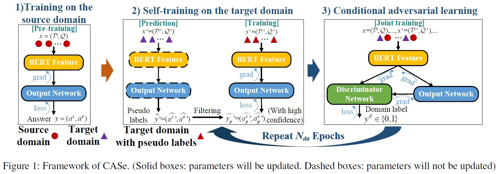
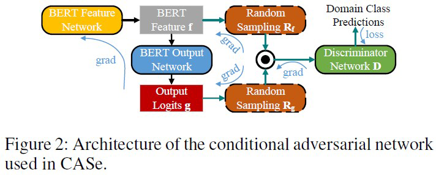

Motivation
- 现实世界中存在很多无标签的数据，而现有的机器阅读理解模型的泛化能力差，即从一个领域学到的知识很难用于其他无标签的数据集的答案预测。甚至即便是BERT这种在巨型无监督数据集上预训练的模型，在某个数据集上微调后用于其他数据集时，性能会急剧降低。
- 对于能解决该问题的无监督域适应(Unsupervised Domain Adaptation)的研究较少，即便有，现存研究(如Chung等人[1]于EMNLP 2018提出的无监督问答迁移学习方法)也没有分析影响迁移性能的可能原因。并且，他们采用的目标数据集是较小的MRC数据集，尚不清楚对大规模数据集进行迁移学习的效果。
Contribution
- 提出一种新的用于MRC的无监督域适应方法(Conditional Adversarial Self-training, CASe)，采用交替训练的方式，在6种数据集上的相关实验结果表明该方法能够使得模型在源数据集训练后在目标数据集上的性能大大提升，并接近有监督方法的性能。
- 在自训练的基础上，加入低置信度过滤机制，防止模型学习错误目标领域分布。
- 提出使用条件对抗学习(Conditional Adversarial Learning)，即使用结合BERT特征以及BERT最终输出logits的判别器，使得模型学得更一般的表示，防止在自训练产生的伪标签数据上过拟合。
- 实验发现迁移的效果与源域和目标域的数据问题形式高度相关，问题形式一致语料的迁移效果最好（如CNN和DailyMail的问题都是完型填空类型）。
Model

由上图可知，该模型首先在源域数据集$x$上进行训练，然后交替进行目标域数据训练以及条件对抗学习。首先用预训练的BERT获得特征$\bar{\text{f}}$，然后过一个batch normalization得到f，再添加一个输出为2维向量的单层线性网络，其中一个用于答案开始logits $g^s$，另一个为答案结束logits $g^e$，然后使用交叉熵作为第一阶段训练的目标函数。
之后在目标域数据集$x’$上进行自训练。特别地，作者做了一个假设，即不同域共享相似的特性，即预测的答案与新域的正确答案范围类或者相同。在模型为每个答案开始和结束位置生成概率时，作者采用一个阈值$T_{prob}$来过滤低置信度样本。此外，由于篇章较长，在所有logits上使用softmax会使得生成得概率之间数值差异较小，从而作者提出先选择$n_{best}$个开始和结束索引概率和最大的索引对 ：
然后再对这些索引对采用softmax，将最大的值作为预测范围的概率：
从而将概率大于阈值$T_{prob}$的伪标注样本保留，实验分析阈值在0.3-0.4之间效果最好。
其实一开始就能获得开始和结束所以概率和最大的对，之所以还要选择 $n_{best}-1$个，是为了用softmax求得 。文章将超参 $n_{best}$设为20，没有对应的实验分析。特别地，在每轮自训练中，只保留最后一个模型产生的伪标注样本。
之后作者采用Long等人[2]于2018 NeurIPS提出的条件对抗网络CDAN，其融合了之前所说的f和g。结构如下：

这里判别器$D$的条件为g，采用的方法为多重线性映射，即两个向量的外积。但由于这里存在维度爆炸的情况，采用了一种随机方法来近似：
$Z_R$即随机采样多重线性映射，由下式可得：
其中，$avg_{\text{col}}$是对列做平均， $\text{R}_\text{f}$和$\text{R}_\text{g}$是随机初始化的矩阵，训练时固定，$g=g^{s}\otimes g^{e}\in R^{2m}$ 。这里的判别器为三层网络，最后一层为带有sigmoid的一维输出网络。由于是两种数据集混合训练，判别器需要判别样本属于哪个域，预测值即sigmoid得到的0-1之间的标量。从而可以得到二值交叉熵损失：
在此基础上，作者提出给容易迁移的样本更高的优先级，即为样本加权，为量化样本是否容易迁移，给出熵：
从而得到新的损失：
使得具有较低熵的样本权重更大。
此外，训练时最后一个epoch不进行对抗学习，目的是更好地拟合目标域。
文章： Unsupervised Domain Adaptation on Reading Comprehension[3]（AAAI 2020）
[1]: Chung Y A, Lee H Y, Glass J. Supervised and unsupervised transfer learning for question answering[J]. arXiv preprint arXiv:1711.05345, 2017.
[2]: Long M, Cao Z, Wang J, et al. Conditional adversarial domain adaptation[C]//Advances in Neural Information Processing Systems. 2018: 1640-1650.
[3]: Cao Y, Fang M, Yu B, et al. Unsupervised Domain Adaptation on Reading Comprehension[C]//AAAI. 2020: 7480-7487.
If you like this blog or find it useful for you, you are welcome to comment on it. You are also welcome to share this blog, so that more people can participate in it. If the images used in the blog infringe your copyright, please contact the author to delete them. Thank you !